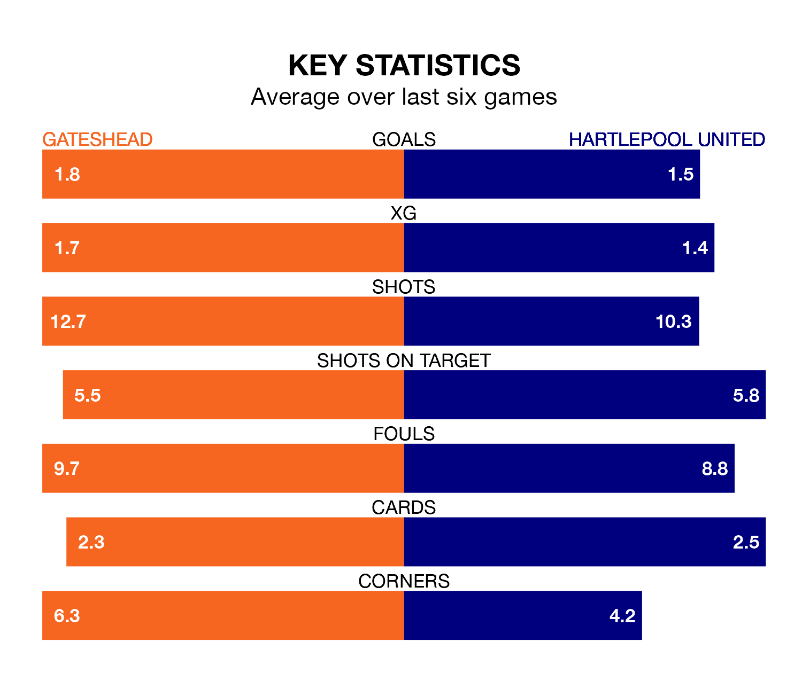

Hartlepool United travel to Gateshead on late Tuesday in the National League.
The visitors come into the game on the back of a draw in their last match, having tied with Eastleigh 1-1 away, with a goal from Joe Grey.
The Tynesiders, meanwhile, won their last match, 3-2 against Altrincham, with their goals scored by Marcus Dinanga Nyamabu, Kieron Evans and Kain Adom.
With 75 goals in 39 games so far this season, Gateshead are the league's third-highest scorers with 1.9 goals per game. And they are conceding fewer than average, letting in 56 goals at a rate of 1.4 per game.
Hartlepool, meanwhile, are average scorers, with 1.5 goals per game. They have conceded 1.7 goals per game.
The Tynesiders are sixth in the table after 39 games, of which they have won 18 and drawn nine, earning 63 points.
United are eight places behind the hosts in 14th, with 14 wins and seven draws putting them on 49 points.
Gateshead are in mixed form in the National League, with two wins and a draw from their last six games.
With two wins and two draws over that period, Pools' form is slightly better – they have taken eight points from 18, compared to Gateshead's seven.
Updated: 12:16 (UTC), 25/03/24